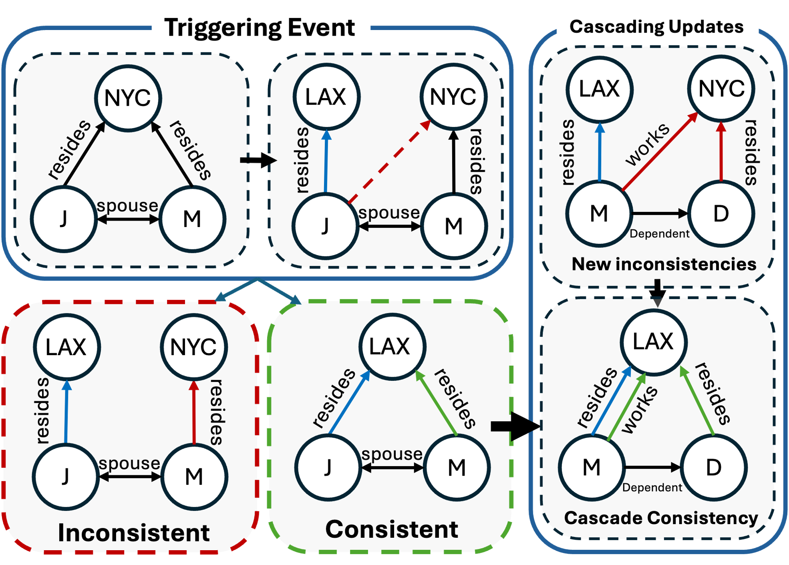
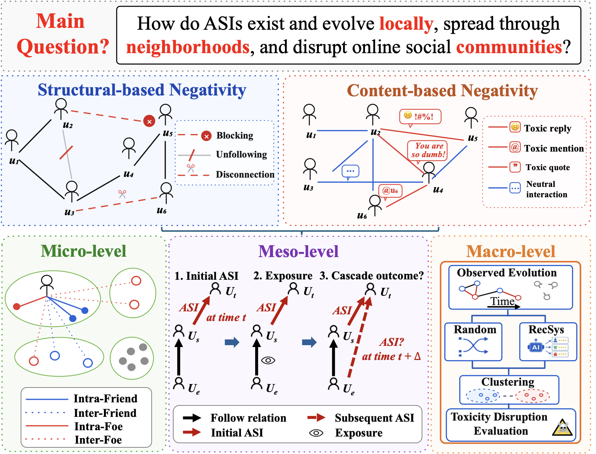
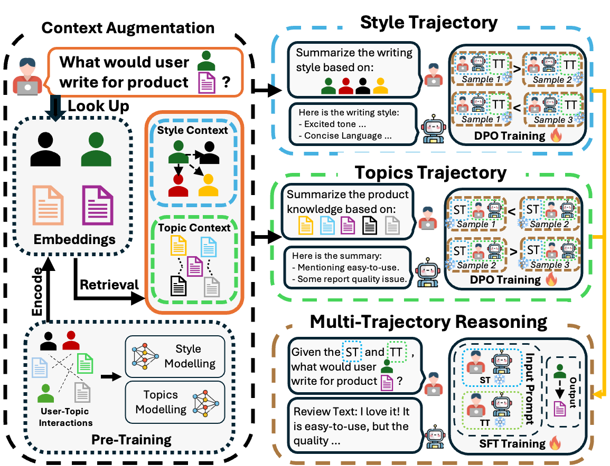

Qinwen Ge
About
I'm a second-year Computer Science PhD student at Vanderbilt University, advised by Professor Tyler Derr in Network and Data Science Lab. Previously, I obtained my Master's degree in Computer Science from Vanderbilt University and my Bachelor's degree in Information Management and Information Systems from Tongji University.

Research Interests
I study autonomous scientific search: building AI scientists that can move beyond solving human-defined problems to autonomously identify important questions, navigate the scientific knowledge landscape, and pursue research directions with the potential to meaningfully advance science.
Previously, I worked at the intersection of graph machine learning and network neuroscience, focusing on data-centric brain graph construction from fMRI signals.
Email / Google Scholar / Github / LinkedIn
News
- I've received the travel award for the SDM 2026 Doctoral Forum, where I'll be presenting our work AutoKD. See you in Salt Lake City!
- "Defining and Benchmarking a Data-Centric Design Space for Brain Graph Construction" has been accepted to Journal of Data-centric Machine Learning Research (DMLR)!
- "AutoKD: Autonomous Knowledge Discovery" has been accepted to SDM 2026 Doctoral Forum!
- "Risk-Controlled Event-Driven Cascading Updates for Knowledge Graph Consistency Restoration" has been accepted to Findings of ACL 2026!
- Started my PhD journey at Vanderbilt University.
- Successfully defended my Master's thesis "Enhanced Brain Graph Construction in Neuroimaging: A Data-Centric AI Approach"!
Papers and Preprints


